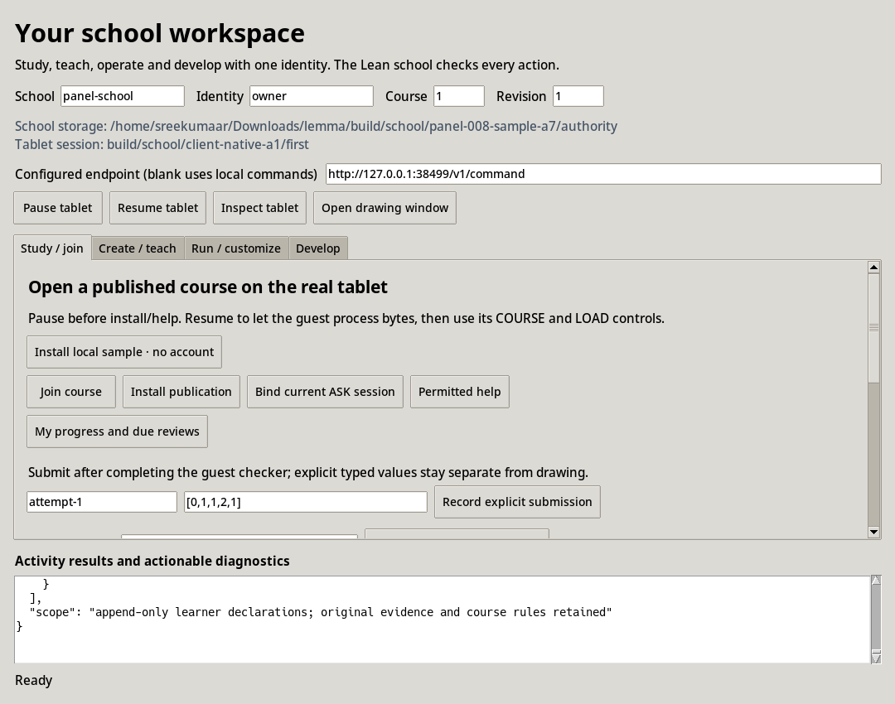

Native school workspace
scripts/lemmasim school-open opens a native activity panel for an existing LemmaSim session and a local Lean school. Study, create, operate and develop share the selected identity. Each school command executes the maintained Lean authority; its grants determine which actions that identity may perform. Switching tabs grants no new capability.
export session_dir school_root school_id actor_id
nix-shell tooling/lemmasim/session.nix --run \
'python3 scripts/lemmasim school-open \
--session-dir "$session_dir" --school-root "$school_root" \
--school "$school_id" --actor "$actor_id"'
Set those shell variables to the actual paths and identities before launching. The pinned session environment supplies Tk. The optional --school-executable and --curriculum-executable select previously produced, source-qualified native executables. --school-endpoint http://127.0.0.1:8790/v1/command attaches to an existing loopback service. Ordinary schools use the authority's monotonic clock; --controlled-now is only for an explicitly controlled-clock fixture.
Start with the local sample, without an account
The default course and revision are 1/1. The shared sample unit is the original authored distributivity fixture with one explicit teacher edit: course identity 801 becomes 1. The original Lean fixture remains 801. This bounded identity opens at the guest chooser's initial selection, without hundreds of ID+ taps.
With a paused admitted Developer or Laboratory tablet session, choose Install local sample · no account in Study / join. That action compiles the shared JSON through the normal Lean authoring compiler and copies the resulting package through the existing checked raw guest transport. It requires neither an account nor initialized school storage. The required school/identity launch fields can be local labels for this path; no enrollment or school command is sent. Resume until the actual 4b1 installer receipt succeeds, then use the guest COURSE and LOAD controls at 1/1. The raw transport acknowledgement alone is not an installation or visible-delivery result.
In Create / teach, Load sample unit 1/1 reads that same JSON file into the editor. Validate / preview and Publish use the maintained Lean decoder and compiler. To publish a school revision, first initialize fresh local storage in Run / customize, publish the unit and enroll through Join course. The account-free sample route and the enrolled school route consume identical package bytes.
.lake/build/bin/school-curriculum preview examples/school/sample-unit.json
.lake/build/bin/school-curriculum compile examples/school/sample-unit.json build/school/sample-NEW.lcp
The sample receipt records current Lean preview/compilation and full byte equality with the prior actual 1/1 guest installation. Only the successful installer, reader and varying exact-checker phases are reused from that historical run. Its later ASK timeout and overall FAIL remain unchanged. The panel smoke does not claim a new live sample installation.
Four activities
| Activity | Available actions | Authority |
|---|---|---|
| Study / join | Install the local1/1 sample without an account; enroll; install a publication; bind the current guest ASK; request permitted help; inspect progress and due reviews; record explicit typed values with actual guest checker observations; reopen an original due publication; set a goal, challenge an interpretation, override a permitted suggestion and inspect declaration history. | The school decides enrollment and assistance; the actual guest admits packages, checks typed mathematics and renders pixels. |
| Create / teach | Edit the shared authoring JSON; run Lean validation and preview; publish an immutable revision; import and search a source catalogue; inspect a learner's progress when authorized. | The same Lean decoder, validator and package compiler used by the learner path. |
| Run / customize | Initialize fresh local storage with explicit budget JSON; run a loopback endpoint; inspect status, budgets and jobs; reconcile; export; stop; clone a reusable definition; restore an export offline to fresh storage. | The Lean durable authority validates all bounds, lifecycle transitions, provenance and disclosure. |
| Develop | Open the school, authoring, client and machine contracts; run maintained Lean reference checker examples; pause, resume or inspect the actual session and open its drawing window. | The existing simulator session API and maintained Lean modules. |
The teacher editor preserves the actual text supplied by its user in an ignored local authoring file. It passes that file to the Lean compiler. It has no second curriculum model. Results and actionable errors appear beneath the activity tabs; command stdout and stderr remain under ignored build/school/panel-actions/ directories.
For written proof or explanation work, select the declared activity/task, choose its actual work file, and enable Explicit work for teacher review before recording the submission. The school retains that opaque artifact and explicit metadata under its assessment policy. The bridge supplies no fabricated guest checker receipt. Such work remains unsupported by the fixed exact coefficient checker and requires teacher review.
Scroll down in Study / join to My goals, challenges and permitted recommendation overrides. Copy an original attempt or suggestion key from progress or a suggestion, select its exact policy version, and enter a fresh request ID and your reason. Set goal also takes a new goal. The selected identity, course and revision remain the request context. Goal, challenge and override buttons forward those fields to Lean; Choice history displays the committed declarations. The authority checks ownership, enrollment, the immutable original publication/policy and whether the original suggestion permits an override. A declaration preserves the original work, inference, checker result and assistance permissions. An attempt cannot be overridden as though it were a suggestion.
Real tablet delivery
The panel uses the existing raw guest bridge. Pause before installing a publication or delivering assistance. Resume until the actual installer reports a committed package. Open the course through its guest COURSE/LOAD controls. On a selected course node, ASK and finish that control, pause and bind the school session, then resume the invitation installer and use the guest JOIN control. Request permitted help for that joined context, resume the actual package installer, and use the guest's assistance LOAD control. Admission acknowledgements alone do not demonstrate visible delivery; the actual guest receipts and completed pixels do.
Tablet controls use the specified session's real socket. A closed or unavailable session returns its actual error. The bridge retains the existing Developer/Laboratory target-admission requirement; opening this host workspace does not change a Student session's mode or add a hidden grant. The drawing window is the existing native viewer and uses the modeled pen path.
Transport and verification
Local commands go through school_transport.py and its OS mutex. A running service and a second command writer cannot silently own the same mutable school storage. Endpoint mode forwards bounded JSON to an explicit loopback HTTP /v1/command endpoint, with proxies and redirects disabled. The panel starts no remote provider and implements no school scheduling, grading or retention policy in Python.
scripts/check_school_panel.py --help exposes the maintained check. It verifies the exact native producer inventory before and after actual initialization, publication, enrollment, byte-preserving course retrieval, denied ungranted learner evidence, Lean authoring preview, HTTP status and exclusion of a second direct writer. It creates a deliberately supplied typed attempt, records a goal and challenge through native/HTTP transports and checks that Lean rejects overriding that attempt. With --gui, the pinned Tk runtime opens an isolated Xvfb display, renders all four tabs, executes goal/challenge/history actions, displays an actual override rejection and captures the form scrolled into view above actual results. The separate job-worker scenario records a permitted positive override against its genuine RV64-derived suggestion. This GUI receipt covers presentation and transport. The separate connected client scenario covers a running guest, drawing, real hint pixels and cold reopening.
The retained native panel receipt records the final hosted producer and every presentation source digest. Its referenced tablet session is closed historical metadata used only to render the selected session path. No machine-control or live-guest claim is made by that smoke test. The teacher, operator, developer and scrolled learner declaration form views are retained alongside the study view below.



The workspace is an owner-local development binding. Its identity field is explicit local identity selection within the existing OS-owner trust boundary. It does not establish authenticated remote accounts, protected student credentials, replicated availability or an internet deployment.